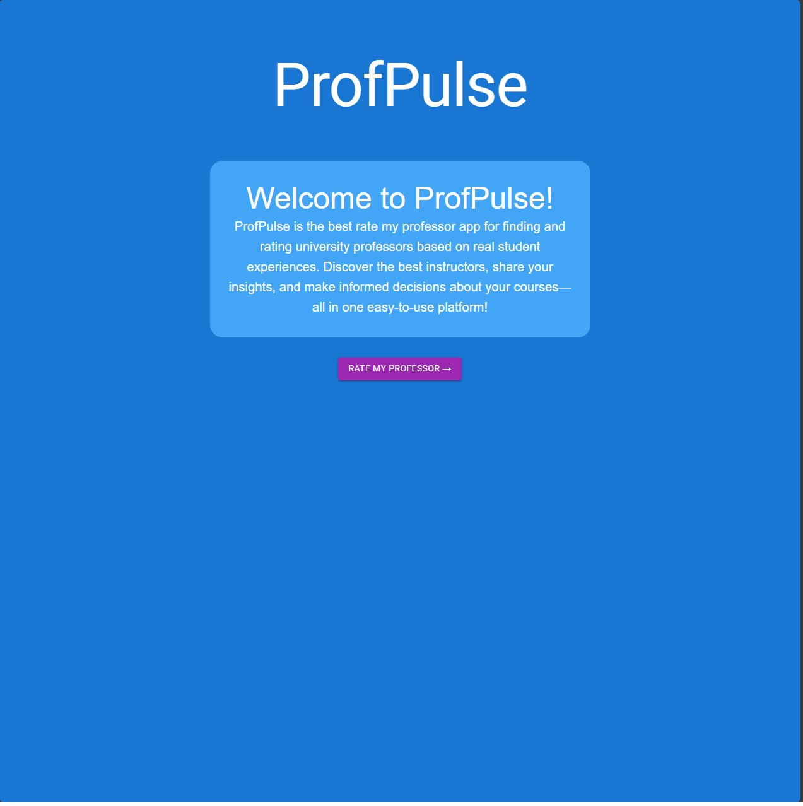
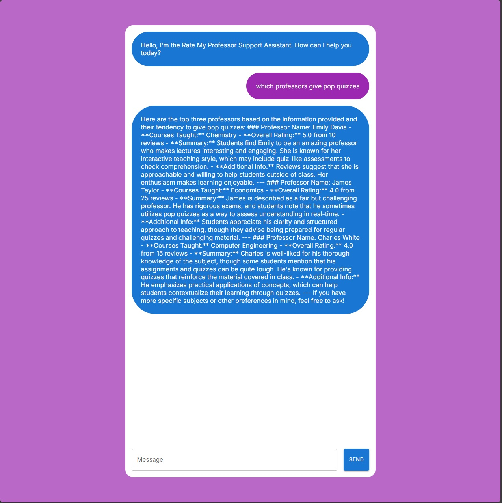

ProfPulse
Project Overview
Introduction:
- Title: ProfPulse
- Completed: August 2024
- Role: Software Developer
- Team: Ryan (me), Kirit (Full Stack Developer), Vraj (Full Stack Developer)
Summary:
ProfPulse is an innovative application designed to help students choose the best professors by leveraging AI-driven insights. The app allows users to ask specific questions like "Which professor is the best at explaining difficult concepts?" and receive tailored responses based on aggregated ratings and reviews from dummy data.
Features:
User Interaction:
- AI-Driven Q&A: The app uses OpenAI’s models to provide answers to user inquiries about professor performance, enhancing decision-making.
Data Management:
- Efficient Data Storage: Pinecone is utilized for fast and scalable storage of professor data, ensuring smooth operation and quick data retrieval.
User Interface:
- Responsive Design: Built with React and MaterialUI, the app offers an intuitive and visually appealing interface on all devices.
Key Decisions and Implementation:
- User Interface: Developed using React and MaterialUI to ensure a user-friendly experience.
- AI Integration: OpenAI’s API powers the Q&A feature, providing intelligent responses to user queries.
- Data Handling: Pinecone was chosen for its speed and efficiency in managing the app’s data storage needs.
Technologies and Tools:
- React: For building dynamic user interfaces.
- Material-UI: For designing a sleek and intuitive user interface.
- OpenAI: For AI-driven responses and enhanced user experience.
- Pinecone: For scalable and efficient data storage.
- Git: Implemented for version control to track changes and collaborate effectively.
- Vercel: Utilized vercel to host and deploy the website for public use.
Gallery/Visuals
Landing Page:
Q&A Page:
- Challenge: Ensuring fast, accurate AI responses based on limited data.
- Solution: Integrated Pinecone to handle data efficiently and used OpenAI’s API to generate intelligent and contextually relevant responses.
- Challenge: Designing a user interface that is both functional and appealing.
- Solution: Leveraged MaterialUI and React to create a responsive, modern interface.
Future Directions
- Enhanced AI Capabilities: Further refining the AI model to offer more personalized and accurate professor recommendations.
- User Feedback Integration: Allowing real user data to replace dummy data for more reliable outcomes.
- Mobile Application: Extending functionality to a mobile app for better accessibility.
Conclusion:
ProfPulse demonstrates the power of combining AI with modern web development technologies to create a tool that can significantly improve the decision-making process for students. With potential for real data integration and mobile app development, the app is poised to become an essential resource in educational environments.
Source Code
View on GitHubTry It Out Yourself!
Link to Project